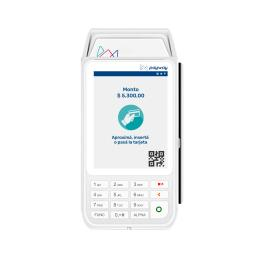
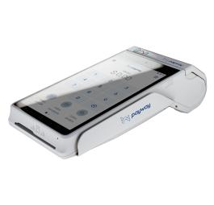
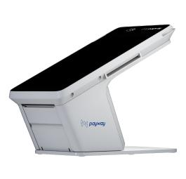

Las redes de terminales Pos nacieron para facilitar los medios de pago en los comercios. POS-tec nacio para que estas redes funcionen.
La filosofia de POS-tec consiste en convertirse en un socio estrategico de sus clientes.

Terminal Classic
Android inalámbrica
Acepta tarjetas, relojes y QR
Conexión a Wifi, Bluetooth, 4G
Datos móviles gratis
Envío de tickets por mail
Uso en mostrador
Pantalla de 3.5”
Ver mas

Terminal Smart
Android inalámbrica
Acepta tarjetas, relojes y QR
Conexión a Wifi, Bluetooth, 4G
Datos móviles gratis
Envío de tickets por mail
1 día de batería
Pantalla de 5”
Ver mas

Terminal S Pro
Android escritorio
Acepta tarjetas, relojes y QR
Conexión a Wifi, Bluetooth, 4G
Datos móviles gratis
Envío de tickets por mail
Uso en mostrador
Pantalla de 7”
Ver masPOS FIJOS O INALÁMBRICOS
Según sea la necesidad de su comercio pueden conectarse a una línea telefónica, a un chip de teléfono celular o a internet.
OPERA CON TODAS LAS TARJETAS
El Pos puede aceptar todas las tarjetas de crédito, débito y prepagas del mercado.
INTEGRACIÓN CON FACTURACIÓN
Puede transmitir automáticamente los datos de las operaciones efectuadas y registrarlos en el sistema de facturación de su comercio, ya sea a una PC o a una dirección IP, por cupón o cierre de lote.
FUNCIONES ADICIONALES
POS-tec brinda además soluciones de Tax Free, recargas de crédito/pines, informes Veraz, preadjudicación de créditos, salud, pin pad, programas de puntos, entre otros.
VISITAS TÉCNICAS
Evite la manipulación indebida del Pos. Ante la visita de un técnico, siempre solicite credencial identificatoria o contáctese con nosotros para validar su identidad.
PRESENCIA EN TODO EL PAÍS
POS-tec cuenta con cobertura a nivel nacional.